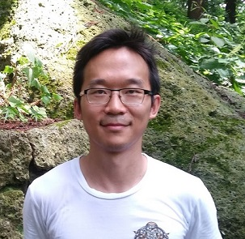

Jon Xu
NOTE: As of June 2021, I am no longer in academia and will update this page at some point to reflect this. For now, please see my LinkedIn.
E-mail: jy#z.x#u@toh#oku.ac.jp (remove the #'s)
About Me
I am currently a JSPS overseas postdoctoral fellow (日本学術振興会外国人特別研究員) at Tohoku University, Japan.Previously, I was a PhD student and casual tutor at the University of Melbourne.
My supervisor was Arun Ram (University of Melbourne) and my cosupervisor was John Bamberg (University of Western Australia).
My PhD Thesis studies flag varieties of Chevalley groups from the point of view of finite geometry.
In particular, it provides a combinatorial method to calculate the number of i-planes incident with a given j-plane inside a Schubert cell.
It also shows how key examples of ovoids arise as flag varieties, and provides a Schubert cell decomposition of the classical ovoid in Hermitian space.
I am generally interested in representation theory, combinatorics and finite geometry, some keywords are:
- The combinatorics of flag varieties of Chevalley groups (see the paper of Parkinson-Ram-Schwer).
- The Erdős–Ko–Rado theorem for buildings (see the paper of Ihringer-Metsch-Mühlherr).
- Describing other extremal subobjects (spreads, blocking sets, m-ovoids, MDS-codes, EKR-sets) of representation theoretic objects (Schubert cells, Schubert varieties, Springer fibers).
- Characterising finite geometric objects using point-line incidence axioms (for example, the Veblen-Young theorem, and the classification of spherical buildings of rank greater than 2 by Tits).
- Schubert calculus, representation theory of finite/affine complex Lie algebras, representation theory of quantum groups and Hecke algebras.